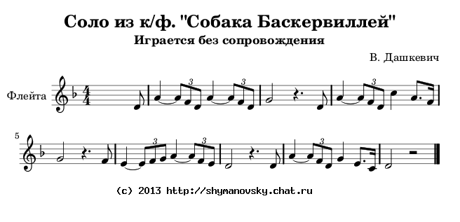

Ноты для свирели  Специально для исполнения ночью в лесу, в компании слабонервных. Во время игры старайтесь держаться подальше от торфяных болот. Ну, конечно, если рассудок и жизнь дороги вам. Послушать: Назад|На главную